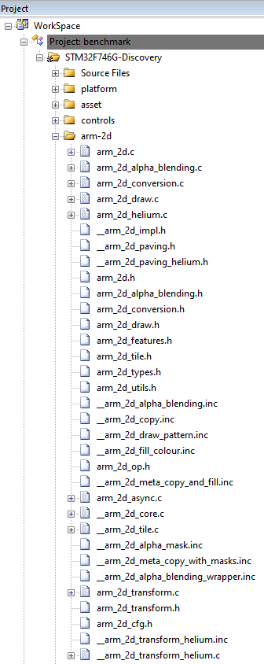
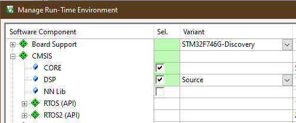

|
Arm-2D
2D Image Processing Library for Cortex-M Processors
|


|
|
Arm-2D
2D Image Processing Library for Cortex-M Processors
|
|
This document is part of the Arm-2D help documents and introduces how to deploy the Arm-2D software library to your existing project(s). If you are not familiar with Arm-2D, we recommend that you first read the README file located in the repository's root directory.
NOTE:
Regardless of whether there are other methods of release later, you can always get the latest content by cloning the Arm-2D software repository on Github using the following command line:
As you can see, the Arm-2D is part of the EndpointAI software package. Considering that EndpointAI will become bigger and bigger, if you only care about the Arm-2D, you can extract the " ***./Kernels/Research/Arm-2D*** " folder out, as it is a standalone library.
For ease of use, it is recommended that all header files in the "Library/Include" directory that are not prefixed with double underscores should also be added to the Arm-2d group of the project.
Figure 2-1 A typical project view after Arm-2D Is added

Add a search path to MDK project configuration for the Arm-2D header files as shown in Figure 2-2:
Figure 2-2 Add search path to the project configuration for Arm-2D header files

Enable C11 and GNU extension support in C/C++(AC6) configurations:
Figure 2-3 Enable "gnu11" in Arm Compiler 6

As the Arm-2D relies on CMSIS 5.7.0 and above (If you want to use Arm-2D with Cortex-M55, you need CMSIS 5.8.0 which you can get from Github), we should check the RTE configuration and ensure proper CMSIS support has been added to the project (as shown in Figure 2-4 the CORE should be selected).
Figure 2-4 Check the CMSIS support in the RTE configuration window

Some features of the Arm-2D can be enabled/disabled manually according to the platform and applications. A series of macros start with "***\_\_ARM\_2D\_HAS\_\_***" are introduces to control those features. Users have to define them in the project configuration to enable corresponding features. Table 2-1 list all available macros.
Table 2-1 A summary of feature control macros
| Macro | Description | Default |
|---|---|---|
| __ARM_2D_HAS_ASYNC__ | A macro to enable/disable asynchronous mode in the Programmers' mode of the Arm-2D. If you don't have any hardware accelerator and only want to use the library in classic synchronous mode (writing blocking code), set this macro to "0" can bring additional performance uplift. | Enabled(1) |
| __ARM_2D_HAS_HELIUM__ | A macro used to enable/disable Helium support. Please note that this macro is defined and maintained by the Arm-2D library, and users should not define it. In some version of CMSIS, if you want to enable Helium support for your Cortex-M55 processor, please define a macro called ARM_MATH_HELIUM manually, which in the long run will be defined by CMSIS automatically, and users should not define it manually. | Depends on other Compiler Options |
| __ARM_2D_HAS_HW_ACC__ | Do NOT define it in this version. | Disabled(0) |
| __ARM_2D_HAS_CDE__ | Do NOT define it in this version. | Disabled(0) |
There are other configurations helpful when using the library list in Table 2-2.
Table 2-2 Useful Configurations
| Configuration | Option | Compiler(s) | Description |
|---|---|---|---|
| Microsoft Extensions | -fms-extensions | Arm Compiler 6, GCC, LLVM | Enable enhanced support for Unnamed Structure and Union Fields introduce by Microsoft Extensions. In Arm Compiler 6, when "-fms-extensions" added, you should also add an option " ***-Wno-microsoft-anon-tag*** " to suppress the corresponding warning. IAR supports this by default. |
Figure 2-5 A Typical Configuration for A MDK project

NOTE:
Table 3-1 Examples List
| Example | Description | Folder | Note |
|---|---|---|---|
| Alpha-Blending | It is an ALL-IN-ONE example that demonstrates almost all the features provided by the library. | examples/alpha_blending | Used as benchmark. |
| Partial-Frame-buffer | It delivers the same visual effects as Alpha-blending example but using Partial-Frame-buffer. It can be used as a template or reference code for programmers who want to implement a graphical user interface on an MCU with small RAM. In this example, 16*16 FPB (512Bytes) is used, and the total system RAM usage is less than 2.5KByte (including stack, heap and FPB). | examples/partial_frame_buffer. | |
| watch_panel | It is a dedicated example for smart-watch like panel. For current version, it is only used to demonstrate rotation algorithms with two spinning gears. Each gear rotates at a different angular velocity and both Colour-masking and alpha-masking schemes are applied. | examples/watch_panel | Used as benchmark |
Figure 3-1 Private and Public Files